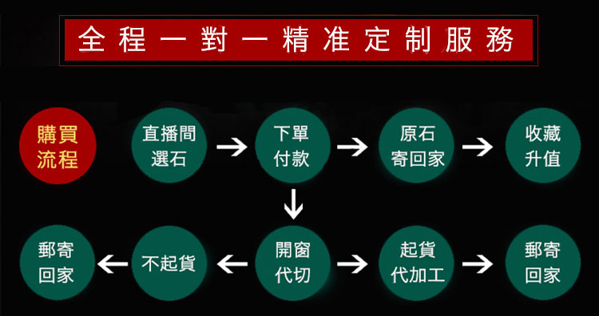

作為翡翠加工過程中最重要的環節—設計，我們公司擁有一支國家級的設計師團隊，團隊人員有國家一級工藝美術大師尤旺興先生、雲南省一級工藝美術大師尤旺斌先生、雲南省一級工藝美術大師思永明先生等等，同時，公司還聘請了翡翠設計行業的前輩導師—國家一級工藝美術大師尤昌明先生擔任公司設計顧問，以下是公司設計師團隊曾經的經典作品和榮譽。

購買翡翠，人們首先想到的是大商場。可行外人並不瞭解，商場有著租金貴、人力成本高等問題，他們普遍在大陸的二、三級市場拿貨，終端成本相當高！最後到達消費者手裡的價格就更貴啦！因此，源頭直購具有天然的價格優勢。
相比價格因素，廣大消費者最擔心的還是買到假貨，一些不法商家為了牟取暴利，通過各種化學方式，普通消費者難以辨別，而買翡翠原石加工成品，可以從源頭保證真品！同時，同等價格的一塊原石，除了加工我們的目標成品外，剩餘的邊角料，根據其尺寸和質地，可能還可以加工掛件吊墜等，所以，購買原石加工成品，保真，且性價比更高！
大家好，我是雲夢，由於靠近緬甸，祖上做玉雕加工從小就接觸翡翠。小時候不愛念書，但看長輩們做玉雕一看就是一天，著實是感興趣。好玉雕更需要好原石，所以中學畢業後就跟隨父親頻繁往返中緬兩國從事翡翠原石交易。之後父親把我送入專業的學習機構進行系統學習，畢業之後開始正式經營翡翠生意。
接觸翡翠行業二十多年，親眼見過太多所謂的“一刀窮，一刀富，一刀穿麻布”的悲劇和傳奇，在這裏還是先要奉勸大家務必謹慎行事。無論您是剛接觸的小白還是有過購買經歷的朋友，我想告訴大家的是，看漲翡翠原石，除了技巧之外，經驗是非常重要的。當您摸過成千上萬塊原石，一眼就可以看出哪些是好貨，哪些是糟粕。但對於普通人來說，平常鮮有機會接觸翡翠原石！雲夢整理了一些個人經驗總結，如果有感興趣的朋友也可以添加【顧問LINE】領取。
如今，經過連年被開采的礦山已愈發貧瘠，導致市面上的高端翡翠越來越少見，價格開始呈幾何倍數增長。為了打破行業暴利，我們決定親自闖蕩緬甸，深入礦區淘貨，給到大家真正的一手貨源。
我們直接與礦主達成原石代銷協議，每天都會有大量優質的翡翠原石送到我們的線上直播間，供世界各地的翠友挑選，同時因為所有的翡翠原石都是直接來自礦主一手的翡翠原石，所以，直播間所有的翡翠原石價格都是有絕對優勢的。
很多人不能來到緬甸，只能通過圖片看翡翠，但是一些商家總是把顏色調的美美的發給客戶，而我們一直堅持在鏡頭下直播原石，讓大家看到翡翠原石最真實的樣子，同時直播間會有現場切石和秒殺撿漏抽獎。點擊添加【顧問Line】，觀看Live直播拍賣。
隨著翡翠市场的興起，市場上出現了好多不法商家，許多商販拿著較差不起眼的翡翠冒充天然翡翠玉石，不僅如此，價格更是高得離譜，把翡翠市場搞得烏煙瘴氣，高價都不一定能買到翡翠真品。
雲夢認為真正想要把翡翠生意做大做長久，除了掌握一手貨源優勢，一定要合規經營，賣真貨，售後透明公開，通過每一個細節去贏得客戶的信任，目前雲夢公司是瑞麗唯一一家集原石採購、片料投標和成品設計加工銷售於一體的綜合性企業。下面是雲夢公司實景宣傳視頻，也歡迎大家來雲夢公司做客。
作為翡翠加工過程中最重要的環節—設計，我們公司擁有一支國家級的設計師團隊，團隊人員有國家一級工藝美術大師尤旺興先生、雲南省一級工藝美術大師尤旺斌先生、雲南省一級工藝美術大師思永明先生等等，同時，公司還聘請了翡翠設計行業的前輩導師—國家一級工藝美術大師尤昌明先生擔任公司設計顧問，以下是公司設計師團隊曾經的經典作品和榮譽。
現在玩翡翠的客戶很多，但是雲夢忠告大家一定要謹慎，我們自己要對翡翠知識有一定的了解，為此，公司開設了每日翡翠知識課堂，Live直播分享，有興趣的朋友可以添加【顧問Line】，參加翡翠知識學習
近期分享話題
1.翡翠鑒定
2.翡翠色系劃分
3.翡翠種水等級劃分
4.挑選翡翠原石有哪些陷阱
5.高品質翡翠原石的挑選技巧
6.如何判斷翡翠原石的市場價格
分享的內容很多，我之前也整理過部分，以下關於翡翠原石常見場口和如何判定翡翠價值我列出來給大家，不過收文章篇幅的限製不能詳細講解， 想要詳細了解，可以點擊添加【顧問Line】，參加在線學習
1、色影響翡翠價格
翡翠原石切開後顏色千變萬化，綠色更是數不勝數，玉是獨一無二的，一模一樣的都非常的少。有：陽綠、艷綠、翠綠、秧苗綠、蔥心綠、癭哥綠、藍水綠、菠菜綠、江水綠、瓜皮綠、油綠、油青。
2、密度影響翡翠價格
在室外自然光下，看到內部結構 ，越細膩越好，密度越大翡翠價格越高。
3、純度影響翡翠價格
盡量不要有雜質、棉、侵染、石性（巧雕除外），這個比較容易達標，就是在室外肉眼看不到就行了。如果實在沒辦法避免，也要正面或者重要部分沒有這些
4、雕工影響翡翠玉價格
雕工精致、比例得當的玉飾（玉器），會給人美的享受，雕工是翡翠價格的重要影響因素，雕工無形中給翡翠玉增加很多附加價值。
大馬砍翡翠原石：
大馬砍主要看紅黃霧糯種料子，黃加綠，三彩，五彩神玉，就是大馬砍的代表，玉雕藝術創作大師的最愛。
莫灣基翡翠原石：
莫灣基主要是出色料，通常出青灰色的的糯種料子（俗稱油青料），帝王綠的代言場口。
莫西沙翡翠原石：
莫西沙主要出種水，通常出白色種水的料子，可出冰種、玻璃種。
木那基翡翠原石：
木那是翡翠市場上一個檔次較高的種料，以鮮艷均勻的綠色、透明清澈的水頭著稱。
後江翡翠原石：
後江主要出紫色和飄花。通常出白色的糯種料子，後江以出比較好的陽綠戒面料聞名天下。
很多客戶平時鮮有機會接觸翡翠原石，但是想要真正入門，光靠學習翡翠知識是不夠的，需要理論結合實踐，因此，雲夢給大家準備了一些原石小樣，有興趣的朋友可以添加【顧問Line】，免費領取
1、本公司所售任何商品均為天然翡翠(翡翠A貨)，發現任何假貨，十倍賠償；
2、本公司所售商品，自收貨之日起有7天鑒賞期；
3、退換貨地址：雲南省保山市騰沖市騰越街道秀峰社區盈鳳小區92號2幢4號；
4、郵箱：rlyczb02@gmail.com
5、電話：+86
【退換貨流程】
A、申請：顧客聯繫線上客服或發郵件提交退貨申請
B、受理：客服在1-3個工作日受理，核實商品退貨原因
C、寄回：顧客寄回商品至倉庫
D、核實：倉庫核實商品
E、退貨：將貨款退回到顧客提供的銀行賬戶(退款)
換貨：重新寄商品給顧客
因質量原因產生的換貨，運費由賣家承擔
因個人原因產生的換貨，運費由買家承擔
【退換貨註明補充】
提供訂單號/運單號、姓名、電話及退換原因
退貨提供銀行賬號，換貨提供需要的換貨規格
為了回饋新老戶客戶的支持與信任，公司推出限量千元優惠券，添加【顧問Line】，免費領取
華石翡翠騰沖市有限公司
總部地址：雲南省保山市騰沖市騰越街道秀峰社區盈鳳小區92號2幢4號
郵箱：rlyczb02@gmail.com
電話：+86